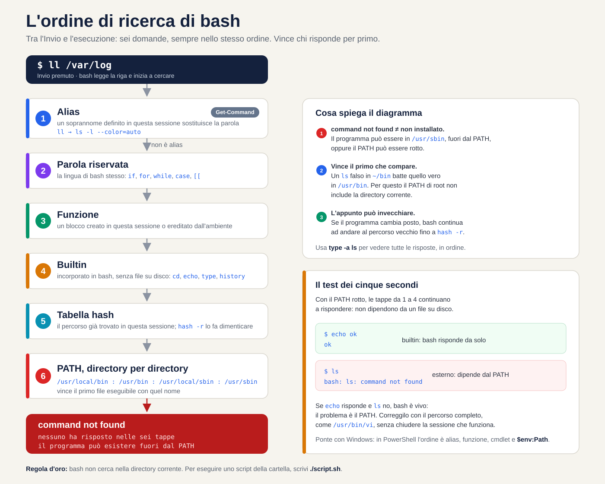
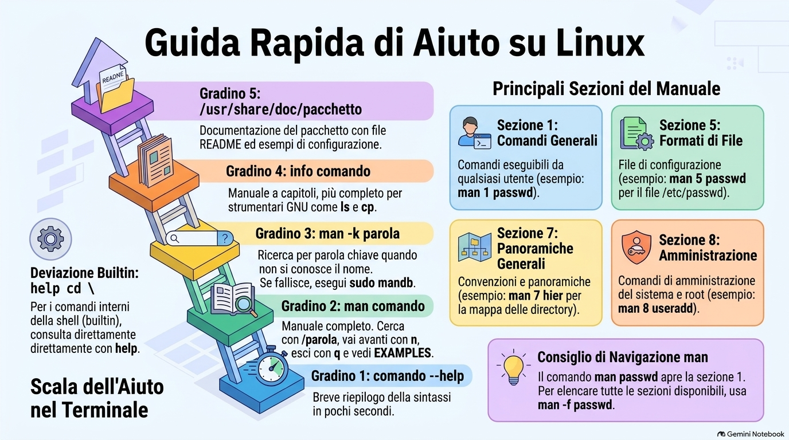
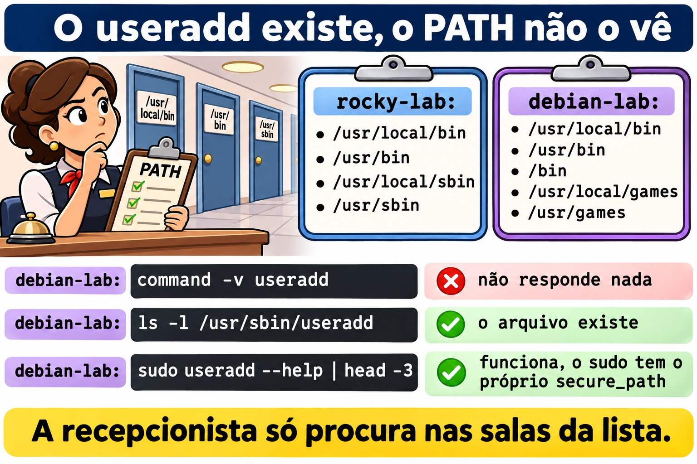
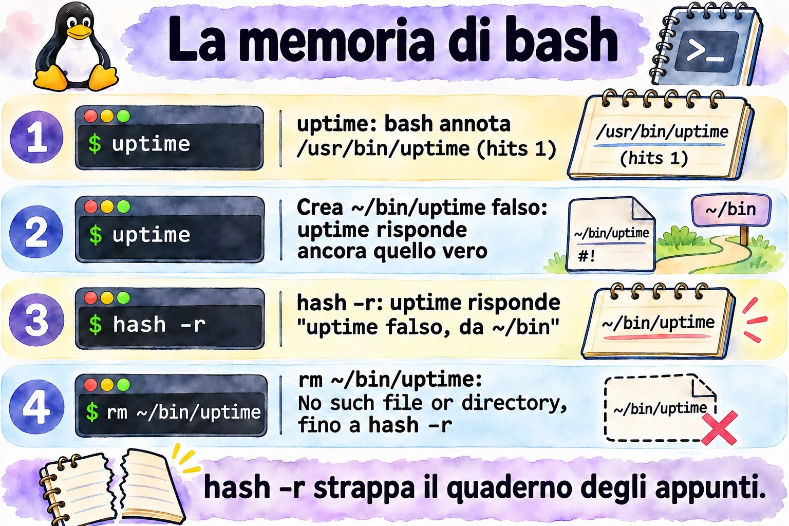

Lezione 1.2 · La shell e l'aiuto
Impari a leggere qualsiasi comando, scopri come bash decide che cosa eseguire e cominci a trovare le risposte dentro il sistema stesso, senza internet, come su un server isolato.
| Scheda | Lezione 1.2 |
|---|---|
| Modulo | M1 · Riga di comando, lezione 2 di 10 |
| Quando | Settimana 1 |
| Alla fine sei in grado di | Scomporre un comando in nome, opzioni e argomenti; spiegare come bash decide che cosa eseguire; diagnosticare un PATH rotto; trovare risposte con man, apropos, info, --help e /usr/share/doc, senza internet; usare cronologia e scorciatoie senza pensarci |
| Prerequisiti | Lezione 1.1 |
| Durata | Circa 2h30 |
| Snapshot | m1a2-inicio e m1a2-fim su entrambe le VM |
1 · Riscaldamento
Tre domande, a memoria, prima di leggere qualsiasi cosa. Scrivi le risposte; le soluzioni le trovi alla fine per controllare.
- Su rocky-lab,
llelenca i file in formato lungo. Su debian-lab rispondebash: ll: command not found. Esiste un programma chiamatoll? - Sei su un server senza internet. Devi ricordare quali campi ha ogni riga di
/etc/passwd. Dove cerchi? - Su debian-lab,
which cdnon risponde nulla, macd /etcfunziona. Dov'è il programmacd?
2 · Perché conta
Venerdì sera, server di un cliente. Aggiungi una riga al .bashrc per mettere una nuova directory nel PATH, sbagli un carattere, chiudi la sessione e rientri. Ora ls, vi e perfino sudo rispondono command not found. Sembra che il sistema sia stato cancellato. Se quella era la tua unica sessione aperta, il resto della serata se ne va nella console remota, o in una trasferta dal cliente.
Con questa lezione riconosci il problema in cinque secondi: echo e cd funzionano ancora, quindi bash è vivo e ha solo perso il PATH. Ripari usando il percorso completo, come /usr/bin/vi, e ti porti dietro un'abitudine che evita lo spavento: non chiudere mai la sessione che funziona prima di aver provato quella nuova.
La seconda metà della lezione parla di come trovare risposte senza internet. Su un server isolato o in un'emergenza non sempre c'è un browser; l'aiuto sta dentro il sistema, in man, in info e in /usr/share/doc. Sul lavoro vale lo stesso, per un altro motivo: il manuale installato sul server descrive esattamente la versione che c'è lì. La risposta del forum è stata scritta per un'altra distribuzione, un'altra versione, a volte un'altra decade.
3 · Modello mentale
Bash è una receptionist con una lista fissa di domande.
Quando pronunci un nome, come ls, lei non si mette a cercare a caso. Segue sempre la stessa lista, nello stesso ordine:
- È un soprannome? Se
llè il soprannome dils -l, lei sostituisce il nome e prosegue la lista con il nome vero. È l'alias. - È una parola della lingua della casa, come
ifofor? È una parola riservata. - È qualcuno che è stato presentato in questa sessione, con nome e incarico? È una funzione.
- È qualcuno della reception stessa? Allora risolve senza lasciare il banco: è un builtin.
- Ho già chiamato questo nome oggi? Allora va diretta nella stanza che ha annotato: è la tabella hash.
- Altrimenti, cerca stanza per stanza, nell'ordine della lista del PATH.
Chi risponde per primo viene chiamato, e la ricerca si ferma lì. Se nessuno risponde, lei dice che non conosce nessuno con quel nome: command not found.
Da questa lista discendono tre conseguenze che userai per tutta la carriera:
command not foundnon significa che il programma non è installato. Significa che non è in nessuna stanza della lista. Può essere in/usr/sbin, fuori dal tuo PATH, oppure il PATH può essere rotto.- Vince il primo che compare. Un
lsfalso in~/binbatte quello vero in/usr/bin, perché~/binviene prima nella lista. Per questo il PATH di root non include mai la directory corrente. - L'annotazione può invecchiare. Se il programma cambia stanza, la receptionist continua ad andare in quella vecchia finché qualcuno non le dice di dimenticarla, con
hash -r.


Leggi il diagramma dall'alto verso il basso: ogni fase viene consultata solo se le precedenti non hanno trovato nulla. Guarda l'ultima casella. Con il PATH rotto, le fasi da 1 a 4 rispondono ancora, perché non dipendono da file su disco. È questo indizio che trasforma lo spavento del venerdì sera in una diagnosi di cinque secondi: se echo risponde e ls no, il problema è il PATH.
Ponte Windows. PowerShell ha la stessa receptionist. Get-Command ls risponde che ls è un alias di Get-ChildItem, e l'ordine di ricerca è simile: alias, funzione, cmdlet e, per ultimi, i programmi in $env:Path. Due differenze fregano chi viene da Windows. Il separatore del PATH in Linux è :, non ;. E bash non cerca mai nella directory corrente: in cmd.exe, un script.bat della cartella corrente parte subito; in Linux devi scrivere ./script.sh.
4 · Concetto a livelli
Essenziale
| Termine | Che cos'è | Esempio |
|---|---|---|
| Shell | Il programma che legge ciò che digiti e lo manda in esecuzione | bash, lo standard su Rocky e Debian |
| Comando esterno | Un programma su disco, trovato tramite il PATH | /usr/bin/ls |
| Builtin | Comando incorporato in bash stesso, senza file su disco | cd, echo, type, history |
| Alias | Soprannome che sostituisce una parola con un'altra prima dell'esecuzione | ll diventa ls -l --color=auto su Rocky |
| PATH | L'elenco delle directory in cui bash cerca i comandi esterni, separate da : | /usr/local/bin:/usr/bin |
| Tabella hash | La memoria di bash: dove ha già trovato ogni comando in questa sessione | hash |
type | Dice che cos'è una parola per bash: alias, builtin, file | type -a ls |
--help | Riassunto delle opzioni, stampato dal comando stesso | ls --help |
man | Il manuale completo, diviso in sezioni | man 5 passwd |
apropos o man -k | Cerca una parola nei titoli e nei riassunti del manuale | man -k password |
mandb | Costruisce l'indice che apropos consulta | sudo mandb |
info | Manuale a capitoli, più completo per gli strumenti GNU | info coreutils |
/usr/share/doc | Documentazione extra dei pacchetti: README, esempi, novità | ls /usr/share/doc/sudo |
history | I comandi che hai già digitato, numerati | history 20 |
Anatomia di un comando. Ogni comando che leggerai in vita tua ha gli stessi pezzi:
ls -lh --sort=time /var/log
│ │ │ └─ argumento: sobre o que o comando age
│ │ └─ opção longa: palavra inteira, dois hífens, pode levar valor
│ └─ opções curtas juntas: -l e -h, um hífen só
└─ nome: o que o bash vai procurar, na ordem do diagramaLe sezioni del manuale che contano.
| Sezione | Contenuto | Esempio |
|---|---|---|
| 1 | Comandi per qualsiasi utente | man 1 passwd: il comando che cambia la password |
| 5 | Formati dei file di configurazione | man 5 passwd: il file /etc/passwd |
| 7 | Panoramiche e convenzioni | man 7 hier: la mappa delle directory |
| 8 | Comandi di amministrazione, quasi sempre di root | man 8 useradd |
man passwd apre la prima sezione che ha la pagina, la 1. Per il file, chiedi la sezione: man 5 passwd. Nel dubbio, man -f passwd le elenca tutte.
La scala dell'aiuto. Quando non sai, sali un gradino alla volta:
comando --help: il riassunto, in pochi secondi.man comando: il manuale completo. Al suo interno,/palavrae Invio cercano,npassa all'occorrenza successiva eqesce. Cerca la sezione EXAMPLES.man -k palavra: quando non sai nemmeno il nome del comando. Se rispondenothing appropriate, l'indice non esiste ancora; eseguisudo mandb.info comando: il manuale a capitoli, più completo per gli strumenti GNU, comelsecp./usr/share/doc/pacote: README, esempi di configurazione e note della distribuzione.
Per i builtin la strada è un'altra: help cd.


Ponte Windows
| In Windows | In Linux |
|---|---|
Get-Command ls | type ls |
where.exe notepad | command -v ls o which ls |
Get-Help comando -Full | man comando |
comando /? o -? | comando --help |
$env:Path, separato da ; | $PATH, separato da : |
Get-History, F7 in cmd.exe | history, Ctrl+R |
Approfondimento
Da dove viene il PATH. Quando entri via SSH, bash legge /etc/profile e poi ~/.bash_profile su Rocky o ~/.profile su Debian, che a loro volta caricano ~/.bashrc. Ogni file può toccare il PATH. Su Rocky, /etc/profile aggiunge /usr/local/sbin e /usr/sbin anche per gli utenti normali, e ~/.bashrc mette ~/.local/bin e ~/bin davanti. Su Debian, il PATH di un utente normale di solito non ha le directory sbin; lo verifichi nel lab.
Sudo ha un PATH tutto suo. La riga secure_path di /etc/sudoers definisce dove cerca sudo. Per questo, nello stesso terminale, useradd può dare command not found e sudo useradd funzionare.
Toccare il PATH cancella la memoria. Qualsiasi assegnazione al PATH svuota la tabella hash. Quando il PATH si rompe, non si salvano nemmeno i comandi che hai appena usato.
Saltare le fasi di proposito. \ls ignora l'alias; command ls ignora alias e funzione; /usr/bin/ls salta l'intera ricerca. type -a ls mostra tutti i candidati, nell'ordine in cui bash li troverebbe.
Non fidarti di which. Conosce solo il PATH. Su Debian è uno script che non vede alias né builtin; su Rocky è un alias che prova prima a leggere i tuoi alias. Per sapere che cosa eseguirà bash, usa type; negli script, command -v.
Il -- chiude le opzioni. Tutto ciò che viene dopo è un argomento, anche se comincia con un trattino: rm -- -arquivo cancella un file chiamato -arquivo.
La cronologia registra tutto. Ogni sessione tiene i comandi in memoria e li scrive in ~/.bash_history all'uscita. La variabile HISTCONTROL decide che cosa resta fuori: su Rocky, ignoredups scarta le ripetizioni consecutive; su Debian, ignoreboth scarta anche le righe che iniziano con uno spazio. Per questo la password non va mai nella riga di comando: resta nella cronologia, leggibile.
5 · Rocky × Debian
La shell è la stessa bash su entrambe le VM, ma ogni distribuzione monta l'ambiente a modo suo. Queste differenze spiegano metà dei "sul mio server funziona, su quello del cliente no":
| rocky-lab | debian-lab | |
|---|---|---|
| PATH di un utente normale | Include /usr/local/sbin e /usr/sbin, in fondo | Di solito senza le directory sbin; verifica nel Passo 3 |
~/bin e ~/.local/bin | Sempre nel PATH, messe da ~/.bashrc | Solo se la directory esiste al login, tramite ~/.profile |
ll | Alias creato in /etc/profile.d/colorls.sh | Non esiste: la riga è commentata in ~/.bashrc |
which | Alias che legge i tuoi alias e le funzioni prima del PATH | Script in /usr/bin/which, che guarda solo il PATH |
HISTCONTROL | ignoredups | ignoreboth: ignora anche le righe che iniziano con uno spazio |
secure_path di sudo | Include /usr/sbin | Include /usr/sbin |
| Manuale delle sezioni 5 e 7 | Pacchetto man-pages, assente dall'installazione minima | Pacchetto manpages |
| Completamento delle opzioni con Tab | Pacchetto bash-completion, assente dall'installazione minima | Pacchetto bash-completion |
| Nome del servizio SSH | sshd | ssh; risponde anche sshd, come alias |
| Documentazione di un pacchetto | rpm -qd sudo | ls /usr/share/doc/sudo |
6 · Lab guidato
Apri tre terminali: uno su rocky-lab (ssh rocky-lab), uno su debian-lab (ssh debian-lab) e uno sul nodo Proxmox, per gli snapshot. A ogni passo, esegui, confronta con l'output atteso e solo dopo leggi il Decidi. Gli output sono estratti; numeri e date sul tuo schermo saranno diversi.
Ogni Decidi è un caso reale di lavoro. Scegli la lettera prima di guardare la tabella: sbagliare qui, con la spiegazione accanto, è il modo più economico di sbagliare.
Passo 1 · Snapshot prima di tutto. Sul nodo Proxmox:
qm snapshot 201 m1a2-inicio --description "Aula 1.2, antes do lab"
qm snapshot 202 m1a2-inicio --description "Aula 1.2, antes do lab"
qm listsnapshot 201Output atteso: l'albero mostra m0a2-fim, m1a1-fim, m1a2-inicio e, per ultimo, current.
Passo 2 · Installa l'aiuto. Sulle VM minimali, una parte del manuale non è installata. Su rocky-lab:
sudo dnf install -y man-db man-pages info bash-completion
sudo mandbSu debian-lab:
sudo apt install -y man-db manpages info bash-completion
sudo mandbCiò che è già installato viene ignorato. mandb costruisce l'indice che man -k consulta, e l'output termina con il conteggio delle pagine elaborate. Poi esci da entrambe le VM con exit e rientra, perché bash-completion venga caricato.
Passo 3 · Leggi il tuo PATH. Prima di eseguire, scommetti: /usr/sbin compare nel PATH di debian-lab? Su entrambe le VM:
echo "$PATH" | tr ':' '\n'Su rocky-lab, una directory per riga, in quest'ordine:
/home/rodrigo/.local/bin
/home/rodrigo/bin
/usr/local/bin
/usr/bin
/usr/local/sbin
/usr/sbinSu debian-lab, qualcosa come:
/usr/local/bin
/usr/bin
/bin
/usr/local/games
/usr/gamesOra, su debian-lab, cerca useradd in tre modi:
command -v useradd
ls -l /usr/sbin/useradd
sudo useradd --help | head -3Se il PATH non ha sbin, il primo non risponde nulla, il secondo mostra che il file esiste e il terzo funziona, perché sudo cerca nel proprio secure_path. Se il tuo PATH ha già /usr/sbin, rispondono tutti e tre, e la lezione vale comunque per i Debian più vecchi che troverai dai clienti.
Decidi 1 · L'useradd sparito. Scenario: su un Debian di un cliente, loggato come utente normale, esegui useradd --help e ricevi bash: useradd: command not found. Che cosa fai?
- A) Reinstalla il pacchetto con
sudo apt install --reinstall passwd. - B) Verifica con
ls -l /usr/sbin/useradded esegui il comando consudo. - C) Aggiungi la directory corrente al PATH con
PATH=$PATH:.. - D) Concludi che Debian non ha
useradde usaadduser.
Scegli un'opzione prima di continuare.
| Se hai scelto | Risultato | Perché |
|---|---|---|
| A | ❌ Sbagliato | Il programma è installato; semplicemente non è nella lista di ricerca. Reinstallare non cambia il PATH e inoltre tocca un server di produzione senza motivo. |
| B | ✅ Giusto | command not found significa "fuori dalla lista", non "non installato". Il file è in /usr/sbin, e creare utenti è un compito di root: sudo cerca già lì. |
| C | ❌ Sbagliato | useradd non è nella directory corrente, quindi non cambia nulla. E mettere . nel PATH apre la porta a un programma falso con il nome di un comando. |
| D | ❌ Sbagliato | useradd esiste su Debian. E anche adduser sta in /usr/sbin: darebbe lo stesso errore. |
Da ricordare: la receptionist cerca solo nelle stanze della lista. Chi sta in un'altra stanza continua a esistere.


Passo 4 · Chiedi a bash che cos'è ogni nome. Su entrambe le VM:
type -a ls
type ll
type cd
type if
type -a whichSu rocky-lab, qualcosa come:
ls is aliased to `ls --color=auto'
ls is /usr/bin/ls
ll is aliased to `ls -l --color=auto'
cd is a shell builtin
if is a shell keyword
which is aliased to `(alias; declare -f) | /usr/bin/which --tty-only --read-alias --read-functions --show-tilde --show-dot'
which is /usr/bin/whichSu debian-lab, qualcosa come:
ls is aliased to `ls --color=auto'
ls is /usr/bin/ls
ls is /bin/ls
bash: type: ll: not found
cd is a shell builtin
if is a shell keyword
which is /usr/bin/which
which is /bin/whichTre letture. ll esiste solo dove qualcuno ha creato l'alias. which è una cosa diversa in ogni distribuzione. E, se il PATH di debian-lab ha /bin, ls compare due volte: è lo stesso file, perché nei Debian attuali /bin è un collegamento a /usr/bin.
Decidi 2 · Lo script che funziona nel terminale e fallisce in cron. Scenario: uno script di backup su rocky-lab comincia con #!/bin/bash e ha la riga ll /backup > /tmp/lista.txt. Eseguito a mano, nel terminale, funziona. Da cron, fallisce con ll: command not found. Perché?
- A) Cron usa un PATH corto, senza
/usr/bin. - B) Gli alias esistono solo nelle sessioni interattive; lo script deve usare
ls -l. - C) Cron esegue lo script con
sh, e non conbash. - D) L'utente di cron non ha il permesso di lettura su
/backup.
Scegli un'opzione prima di continuare.
| Se hai scelto | Risultato | Perché |
|---|---|---|
| A | ❌ Sbagliato | Il PATH di cron è corto, ma include /usr/bin. E non esiste nessun file ll da nessuna parte: nessun PATH lo troverebbe. |
| B | ✅ Giusto | ll è un alias creato in /etc/profile.d/colorls.sh, che viene caricato solo nelle sessioni interattive. In uno script, bash non espande nemmeno gli alias. Nello script, scrivi il comando vero. |
| C | ❌ Sbagliato | La prima riga, #!/bin/bash, garantisce bash. E, anche in bash, lo script non espande gli alias. |
| D | ❌ Sbagliato | La mancanza di permessi dà Permission denied, non command not found. Leggi il messaggio: dice quale fase è fallita. |
Da ricordare: l'alias è una comodità di chi digita. Lo script non digita.
Passo 5 · La memoria di bash. Su rocky-lab:
hash -r
hash
uptime
hash
type uptimeOutput atteso: prima hash: hash table empty; dopo uptime, la tabella mostra /usr/bin/uptime con 1 nella colonna hits; e type risponde uptime is hashed (/usr/bin/uptime).
Ora crea un uptime falso in ~/bin, che nel PATH viene prima di /usr/bin:
mkdir -p ~/bin
printf '#!/bin/bash\necho "uptime falso, de ~/bin"\n' > ~/bin/uptime
chmod +x ~/bin/uptime
uptimePrevedi prima di premere Invio: quale uptime risponde? Quello vero. Bash non ha nemmeno guardato il PATH, perché il percorso era già annotato. Digli di dimenticarlo:
hash -r
uptimeOra risponde uptime falso, de ~/bin. Infine, cancella il falso senza svuotare la tabella:
rm ~/bin/uptime
uptime
hash -r
uptimeIl primo uptime risponde bash: /home/rodrigo/bin/uptime: No such file or directory: bash è andato dritto nella stanza annotata, ed era vuota. Dopo hash -r, torna quello vero. Tieni a mente questo messaggio: un percorso completo nell'errore, per un programma che hai chiamato solo per nome, è il segno di un'annotazione vecchia.
Decidi 3 · La versione che non cambia. Scenario: sul server di un cliente, installi la nuova versione di uno strumento di backup in /usr/local/bin. La vecchia resta in /usr/bin. Nella stessa sessione, l'opzione --version mostra ancora la vecchia. Che cosa fai?
- A) Reinstalli la versione nuova, perché l'installazione è fallita.
- B) Esegui
typecon il nome dello strumento e, se compare comehashed, svuoti conhash -r. - C) Inverti l'ordine del PATH, perché
/usr/local/binviene dopo/usr/bin. - D) Riavvii il server perché il sistema riconosca la versione nuova.
Scegli un'opzione prima di continuare.
| Se hai scelto | Risultato | Perché |
|---|---|---|
| A | ❌ Sbagliato | L'installazione è riuscita; è bash che non ha cercato di nuovo. Reinstallare non cancella l'annotazione. |
| B | ✅ Giusto | Bash ha annotato il vecchio percorso la prima volta che hai usato lo strumento. hash -r cancella le annotazioni; la ricerca successiva scorre il PATH e trova per primo /usr/local/bin. |
| C | ❌ Sbagliato | Su Rocky e su Debian, /usr/local/bin viene prima di /usr/bin, proprio perché ciò che installi a mano batta ciò che arriva dal pacchetto. |
| D | ❌ Sbagliato | Funzionerebbe per caso, perché la nuova sessione parte senza annotazioni. Ma butta giù i servizi del cliente per qualcosa che si risolve con un comando. Uscire e rientrare in SSH sarebbe già bastato. |
Da ricordare: un'annotazione vecchia manda la receptionist nella stanza sbagliata. hash -r strappa il quaderno.


Passo 6 · Il manuale e le sezioni. Su entrambe le VM:
ls --help | head -15
man -f passwd
man 5 passwdman -f mostra qualcosa come:
passwd (1) - change user password
passwd (5) - the password fileSu rocky-lab può comparire anche passwd (1ssl), di OpenSSL. Dentro man 5 passwd, digita /shell e Invio: il cursore va alla descrizione del campo della shell di login. n passa all'occorrenza successiva e q esce.
Ora un caso di lavoro: un cliente vuole che un tecnico riavvii un servizio senza diventare root. La sintassi è nel sistema stesso:
man 5 sudoersAl suo interno, digita /^EXAMPLES e Invio. La sezione degli esempi ha righe pronte da adattare. Esci con q.
Infine, cerca senza sapere il nome del comando:
man -k 'user account'Qualcosa come:
userdel (8) - delete a user account and related files
usermod (8) - modify a user accountSe la risposta è user account: nothing appropriate, l'indice non è stato costruito: esegui sudo mandb e riprova.
Decidi 4 · Il server senza internet. Scenario: su un server senza accesso a internet, una richiesta chiede che l'account dell'utente ana scada il 31 dicembre 2027. Non ricordi il comando. Che cosa fai per prima cosa?
- A) Apri
man passwde lo leggi dall'inizio alla fine. - B) Esegui
man -k expir, trovi il nome del comando e cerchi/expirdentro il suo manuale. - C) Apri
infoe navighi finché non trovi. - D) Provi
--helpsu ogni comando che inizia conuser.
Scegli un'opzione prima di continuare.
| Se hai scelto | Risultato | Perché |
|---|---|---|
| A | ❌ Sbagliato | passwd gestisce la validità della password, non la scadenza dell'account. E leggere un manuale intero consuma minuti che non hai. |
| B | ✅ Giusto | man -k cerca nei riassunti di tutte le pagine, e expir prende "expire", "expiry" e "expiration". Compare chage, e dentro il suo manuale la ricerca porta all'opzione -E. Due comandi e sei sulla riga giusta. |
| C | ❌ Sbagliato | info è ottimo per gli strumenti GNU, ma non cerca in tutti i comandi, e quelli per la gestione degli utenti non hanno nemmeno una pagina info. |
| D | ❌ Sbagliato | È tirare a indovinare con il cronometro che corre. Potresti anche trovare usermod -e, ma per fortuna. |
Da ricordare: man -k è il motore di ricerca interno al server. Funziona solo dopo che mandb ha costruito l'indice.
Passo 7 · info, help e /usr/share/doc. Su entrambe le VM:
info lsSpazio avanza, n passa al nodo successivo, u sale di un livello e q esce. L'info di ls spiega ogni opzione in modo più dettagliato di man. Poi:
help cd
man cdSu debian-lab, help cd spiega il builtin e man cd risponde No manual entry for cd. Su rocky-lab, man cd di solito apre una pagina generale sui builtin di bash; help cd resta la strada breve. Infine, la documentazione dei pacchetti:
ls /usr/share/doc | wc -l
ls /usr/share/doc/sudoSu rocky-lab, rpm -qd sudo elenca tutti i file di documentazione del pacchetto, manuali inclusi.
Decidi 5 · Il manuale che non esiste. Scenario: vuoi sapere che cosa fa l'opzione -P di cd. Su debian-lab, man cd risponde No manual entry for cd. Che cosa fai?
- A) Installi pacchetti di manuali finché la pagina non compare.
- B) Esegui
help cd. - C) Concludi che
cdnon ha opzioni. - D) Cerchi il file
/usr/bin/cdper leggere che cosa fa.
Scegli un'opzione prima di continuare.
| Se hai scelto | Risultato | Perché |
|---|---|---|
| A | ❌ Sbagliato | Esiste un pacchetto con una pagina cd dello standard POSIX, ma descrive il cd generico, non quello di bash. La documentazione giusta è già installata. |
| B | ✅ Giusto | cd è un builtin: vive dentro bash, e a documentarlo è bash stesso, con help. Lì ci sono -P e -L. |
| C | ❌ Sbagliato | L'assenza del manuale non è assenza di opzioni. cd ha -L, -P e altre. |
| D | ❌ Sbagliato | Su debian-lab non esiste /usr/bin/cd. cd deve essere un builtin: un programma esterno cambierebbe la directory di se stesso e terminerebbe, e la tua shell resterebbe dov'era. |
Da ricordare: un builtin si chiede a bash, con help.
Passo 8 · Cronologia e scorciatoie. Su debian-lab:
ls /root
sudo !!Il primo dà Permission denied. !! ripete l'ultimo comando; bash mostra sudo ls /root prima di eseguirlo. Poi:
ls -ld /var/log
cd !$
pwd!$ è l'ultimo argomento del comando precedente: cd va in /var/log. Ora tre scorciatoie, solo da tastiera:
- Ctrl+R e digita
uptime: bash trova l'ultimo comando con quella parola. Invio esegue; Esc permette di modificare prima. - Digita
systemctl status sse premi Tab due volte: compaionosshd.servicesu rocky-lab essh.servicesu debian-lab. - Ctrl+A va all'inizio della riga, Ctrl+E alla fine e Ctrl+U cancella tutto ciò che sta prima del cursore.
Infine, HISTCONTROL, su entrambe le VM. La seconda riga inizia con uno spazio:
echo "$HISTCONTROL"
echo teste-com-espaco
history 3Su debian-lab, il comando con lo spazio non compare nella cronologia. Su rocky-lab, compare.
Decidi 6 · La cronologia come prova. Scenario: il server di un cliente ha smesso di inviare e-mail, e il cliente giura che nessuno ha toccato nulla. Esegui history con il tuo utente e non vedi niente di strano. Che cosa concludi?
- A) Nessuno ha toccato nulla; la cronologia lo conferma.
- B)
historymostra solo il tuo utente e può essere stata modificata; per sapere chi ha fatto cosa servono i registri del sistema. - C) Che manca solo
sudo historyper vedere la cronologia di tutti. - D) Che basta leggere il
.bash_historydi root, che registra tutto ciò che succede sul server.
Scegli un'opzione prima di continuare.
| Se hai scelto | Risultato | Perché |
|---|---|---|
| A | ❌ Sbagliato | history mostra solo i comandi del tuo utente, delle sessioni già salvate. Ogni tecnico, e root, ha la propria. |
| B | ✅ Giusto | La cronologia è un indizio, non una prova: è per utente, viene scritta all'uscita, può essere modificata e, su Debian, ignora le righe con lo spazio davanti. Chi ha fatto cosa si ricava dai registri del sistema, come quelli di sudo nel journal, che imparerai a leggere più avanti nel corso. |
| C | ❌ Sbagliato | history è un builtin, e sudo esegue solo programmi su disco. La risposta è sudo: history: command not found: ancora l'ordine di ricerca. |
| D | ❌ Sbagliato | Conserva solo ciò che è stato digitato come root, e solo delle sessioni concluse. Serve da indizio, ma non mostra che cosa hanno fatto gli altri utenti con sudo. |
Da ricordare: history è l'agenda di ciascuno. L'audit è il registro della portineria.
Il protocollo del command not found. Quattro comandi, in quest'ordine, su qualsiasi server. L'esempio usa useradd; sostituiscilo con il comando del momento:
type -a useradd
echo "$PATH" | tr ':' '\n'
ls -l /usr/sbin/useradd
sudo useradd --help | head -3Il primo chiede a bash che cosa conosce. Il secondo mostra dove cerca. Il terzo dice se il file esiste fuori dalla lista. Il quarto mostra se il problema sparisce con il PATH di sudo. In meno di un minuto sai se il caso è PATH, installazione o permessi.

7 · Rompi e ripara
Adesso rompi di proposito ciò che manda più spesso in crisi le sessioni vere: il PATH. Sono due guasti. Il primo sparisce quando la sessione termina. Il secondo resta scritto nel file di login e torna a ogni nuova sessione. Fai tutto su rocky-lab: lo snapshot m1a2-inicio è lì per questo.
Guasto A · solo in questa sessione
Rompi. Su rocky-lab:
PATH=/tmpNessun messaggio. Sembra che non sia cambiato nulla.
Prevedi. Prima di eseguire ogni riga qui sotto, di' se funziona. Annota le tue previsioni.
ls
echo "$PATH"
cd /var/log
type -a ls
sudo ls /root
/usr/bin/ls /tmp
/usr/bin/sudo ls /rootScopri. Qualcosa come:
bash: ls: command not found
/tmp
ls is aliased to `ls --color=auto'
bash: sudo: command not foundcd non risponde nulla, perché è riuscito. Gli ultimi due funzionano: con il percorso completo, bash non ha bisogno di cercare. L'ultimo può chiederti la password, e sudo trova ls da solo, grazie al suo secure_path.
Guarda type -a ls. L'alias è ancora lì, ma sostituisce solo il testo: ls diventa ls --color=auto, e quel ls deve comunque essere trovato nel PATH. È il diagramma del §3 dal vivo. Le fasi interne a bash rispondono: alias, builtin e lo stesso echo. La fase del PATH non trova nulla.
Decidi 7 · La sessione senza comandi. Scenario: in una sessione SSH su un server di un cliente, dopo aver incollato un blocco di comandi da un tutorial, non funziona nulla: ls, vi e systemctl danno command not found. echo e cd funzionano. Che cosa fai per prima cosa?
- A) Riavvii il server dal pannello dell'hypervisor.
- B) Esegui
echo "$PATH"e, se è sbagliato, correggi il PATH di questa sessione. - C) Reinstalli
coreutils, perché i programmi sono spariti. - D) Chiudi la sessione e rientri, senza guardare nulla.
Scegli un'opzione prima di continuare.
| Se hai scelto | Risultato | Perché |
|---|---|---|
| A | ❌ Sbagliato | Risolverebbe per caso, se il guasto fosse solo della sessione. Ma butta giù i servizi del cliente e cancella l'indizio. Se il guasto è in un file di login, ritorna identico dopo il boot. |
| B | ✅ Giusto | echo e cd vivi con tutto il resto morto è la firma del PATH rotto. echo è un builtin, quindi funziona e mostra la causa in pochi secondi. I programmi restano raggiungibili con il percorso completo, come /usr/bin/ls. |
| C | ❌ Sbagliato | I programmi sono sul disco; è bash che non sa dove cercare. E anche dnf è un programma: con il PATH rotto non risponde nemmeno lui. |
| D | ❌ Sbagliato | Funziona se il guasto era solo della sessione, ma questo non lo sai ancora. Se il tutorial ha scritto la modifica in .bashrc, la nuova sessione arriva identica. Hai scambiato una diagnosi di cinque secondi con un'ipotesi. |
Da ricordare: quando rispondono solo i builtin, guarda il PATH prima di ogni altra cosa.
Ripara. Rimetti il PATH del Passo 3:
PATH=/home/rodrigo/.local/bin:/home/rodrigo/bin:/usr/local/bin:/usr/bin:/usr/local/sbin:/usr/sbinUn altro modo: exit e rientrare. Questo guasto esisteva solo nella memoria di questa sessione.
Verifica.
hash
ls ~
type -a lshash risponde hash: hash table empty. L'assegnazione del PATH ha cancellato le annotazioni, come nel §4. Poi ls funziona e type -a mostra l'alias e /usr/bin/ls.
Guasto B · scritto nel login
Questo è il caso del venerdì sera, nel §2. La regola d'oro viene prima del comando: la sessione che hai aperto adesso resta aperta fino alla fine. È il tuo paracadute.
Rompi. Su rocky-lab, nella sessione già aperta:
cp ~/.bashrc ~/.bashrc.bak
[ "$(hostname)" = rocky-lab ] && echo 'PATH=/tmp' >> ~/.bashrc
diff ~/.bashrc.bak ~/.bashrcdiff mostra l'unica differenza tra la copia e il file, qualcosa come:
27a28
> PATH=/tmpSe diff non mostra nulla, non sei su rocky-lab. Verifica con hostname. La copia .bak è la prima abitudine di questo guasto: prima di toccare un file di login, tieni una copia.
Prevedi. Apri un secondo terminale in Windows ed esegui ssh rocky-lab. Il login funzionerà? Il prompt compare? Che cosa funziona là dentro?
Scopri. Il login funziona e il prompt compare. SSH non dipende dal tuo PATH: .bashrc viene letto solo da bash, dopo che sei già entrato. Là dentro:
ls
echo "$PATH"
vi ~/.bashrc
/usr/bin/diff ~/.bashrc.bak ~/.bashrcQualcosa come:
bash: ls: command not found
/tmp
bash: vi: command not found
27a28
> PATH=/tmpSenza PATH, non si apre nemmeno l'editor. Ma diff con il percorso completo mostra esattamente la riga colpevole.
Ripara. Questa volta, ripara da dentro la sessione rotta, per allenare il caso in cui non è rimasto nessun paracadute:
/usr/bin/sed -i '/^PATH=\/tmp$/d' ~/.bashrc
/usr/bin/diff ~/.bashrc.bak ~/.bashrc
echo "$PATH"sed -i cancella dal file la riga che è esattamente PATH=/tmp. diff non mostra nulla, perché i due file sono di nuovo uguali. Ma echo mostra ancora /tmp. Il file è riparato, la sessione no: ha letto il file quando è iniziata. Esci con exit.
Con il paracadute, la stessa riparazione sarebbe solo sed -i '/^PATH=\/tmp$/d' ~/.bashrc, senza percorso completo. Oppure cp ~/.bashrc.bak ~/.bashrc, che ripristina l'intera copia.
Verifica. Nel secondo terminale, apri una sessione nuova:
ssh rocky-lab
echo "$PATH" | tr ':' '\n'
ls ~È tornato il PATH del Passo 3. Adesso, e solo adesso, cancella la copia e chiudi il paracadute:
rm ~/.bashrc.bakDecidi 8 · La modifica del venerdì sera. Scenario: via SSH, hai appena modificato il .bashrc di root su un server di un cliente per aggiungere una directory al PATH. Qual è l'ordine giusto per testare?
- A) Salvare, uscire dalla sessione e rientrare per testare.
- B) Salvare, aprire una seconda sessione senza chiudere la prima, testare in quella e solo allora chiudere la prima.
- C) Salvare ed eseguire
source ~/.bashrcnella stessa sessione. Se non dà errore, è tutto a posto. - D) Salvare e riavviare il server per caricare il file nuovo.
Scegli un'opzione prima di continuare.
| Se hai scelto | Risultato | Perché |
|---|---|---|
| A | ❌ Sbagliato | Se la modifica ha rotto qualcosa, lo scopri da fuori, senza una sessione buona da cui riparare. Qui il login entrerebbe ancora. Con un errore in sshd_config o nel firewall, nemmeno quello. |
| B | ✅ Giusto | La vecchia sessione conserva l'ambiente che funzionava, ed è da lì che ripari se quella nuova arriva rotta. Chiudi la vecchia solo dopo che la nuova ha dimostrato che è tutto a posto. |
| C | ❌ Sbagliato | Testi nel posto sbagliato: se la riga rompe il PATH, rompi la tua unica sessione buona. E source non riproduce un login pulito, perché ciò che era già caricato resta lì e nasconde gli errori. |
| D | ❌ Sbagliato | .bashrc viene letto quando la shell parte, non al boot. Riavviare non testa nulla e butta giù i servizi del cliente. |
Da ricordare: la sessione aperta è il paracadute. Nessuno toglie il paracadute prima di aver controllato quello nuovo.
E lo snapshot?
Se qualcosa è sfuggito di mano, torna all'inizio del lab. Sul nodo Proxmox:
qm rollback 201 m1a2-inicio
qm start 201Il rollback annulla tutto dal Passo 1, compresi i pacchetti della guida: rifai il Passo 2 prima di proseguire.
Bonus su Debian
Ripeti il Guasto A su debian-lab e aggiungi tre test:
PATH=/tmp
/bin/ls /tmp
/usr/bin/ls -ld /bin
/usr/bin/sudo -i/bin/ls funziona quanto /usr/bin/ls. Il secondo comando mostra il motivo, qualcosa come lrwxrwxrwx 1 root root 7 ... /bin -> usr/bin: nei Debian attuali, /bin è un collegamento a /usr/bin. L'ultimo apre una shell di root con il PATH di root, costruito da zero. Verifica con echo "$PATH".
Questa è l'uscita di emergenza quando il tuo PATH si è rotto e devi riparare qualcosa del sistema. Torna indietro con exit e ripara la tua sessione come nel Guasto A, usando il PATH che hai annotato nel Passo 3, oppure con exit e un nuovo login.
La lezione: un file di login rotto non chiude la porta; chiude ciò che puoi fare dopo essere entrato. Con il percorso completo, ripari ancora tutto. Ma la vera difesa è di procedura: hai cambiato qualcosa che influisce sull'accesso, testa in una sessione nuova con quella vecchia aperta. Vale per .bashrc, sshd_config, le regole del firewall e sudoers.

8 · Trappole
| Sintomo | Causa | Via d'uscita |
|---|---|---|
command not found per un comando che sai essere installato | La sua directory non è nel tuo PATH. È il caso di /usr/sbin per l'utente normale su Debian. | ls -l /usr/sbin/nome per confermare; esegui con sudo o con il percorso completo. |
Su Debian, dopo su, useradd dà command not found | Da Debian 10 in poi, su senza trattino diventa root, ma mantiene il tuo PATH, senza sbin. | su -, che costruisce da zero l'ambiente di root. Se l'installazione non ha impostato la password di root, su non entra nemmeno: usa sudo -i. |
bash: /home/rodrigo/bin/x: No such file or directory per un comando chiamato solo per nome | Annotazione vecchia nella tabella hash: il file è cambiato di posto o è stato cancellato. | hash -r |
| Hai installato la versione nuova e continua a girare la vecchia | Annotazione vecchia, oppure la vecchia sta in una directory che viene prima nel PATH. | type -a nome le mostra tutte; hash -r pulisce le annotazioni. |
ll: command not found su un server, e sull'altro funziona | L'alias esiste solo dove qualcuno l'ha creato. In uno script, l'alias non funziona da nessuna parte. | ls -l. Per tua comodità, crea l'alias nel tuo ~/.bashrc; nello script, scrivi il comando vero. |
which indica un file, ma bash esegue un'altra cosa | Il which di Debian guarda solo il PATH e ignora alias, funzioni e builtin. | type -a nome |
man -k risponde nothing appropriate | L'indice del manuale non è stato costruito. | sudo mandb |
No manual entry for cd | cd è un builtin: a documentarlo è bash. | help cd |
Su Rocky, man 5 passwd non trova la pagina | Installazione minimale, senza il pacchetto man-pages. | sudo dnf install -y man-pages |
sudo cd /var/lib/mysql dà sudo: cd: command not found | sudo esegue solo programmi su disco. I builtin come cd e history per lui non esistono. | sudo ls /var/lib/mysql per guardare, oppure sudo -i per una shell di root. |
script.sh: command not found con lo script nella cartella corrente | Bash non cerca mai nella directory corrente, al contrario di cmd.exe. | ./script.sh |
Una password digitata nella riga di comando compare in history | Bash registra tutto. Solo Debian ignora le righe che iniziano con uno spazio. | Non passare mai la password nella riga di comando. Se l'hai fatto, consideralo compromesso e cambia la password. |
Hai cambiato .bashrc e non è cambiato nulla | Il file viene letto solo quando la shell parte. | Testa in una sessione nuova, con la vecchia aperta. |
Hai incollato un tutorial ed è arrivato $: command not found | Il $ del prompt del tutorial è stato incollato insieme al comando. | Incolla solo il comando, senza il $ davanti. |
9 · Quiz
Rispondi senza guardare la lezione. Le soluzioni commentate sono alla fine.
- In che ordine bash cerca un nome che hai digitato?
type lsrispondels is hashed (/usr/bin/ls). Che cosa significa, e quando questa risposta ti inganna?- Su debian-lab, come utente normale,
useradd --helpdàcommand not found, masudo useradd --helpfunziona. Spiegalo in due frasi. - In che sezione del manuale sta il formato di
/etc/shadow? Scrivi il comando che apre esattamente quella pagina. - Completa gli spazi: per vedere tutti i modi in cui bash interpreta
ls, esegui____ -a ls. Per cercare nel manuale per descrizione,man ___ 'user account'. Se la ricerca rispondenothing appropriate, eseguisudo _____. - Perché
cddeve essere un builtin? - Hai eseguito
cat /var/log/securee hai ricevutoPermission denied. Qual è il modo più breve per ripetere il comando consudo? - Hai modificato il
.bashrcdi un server via SSH. Descrivi il test sicuro in tre passi. - Domanda in inglese, come nei forum e nella documentazione: Which command displays the manual page that describes the format of the /etc/passwd file?
- A)
man passwd - B)
man 5 passwd - C)
info passwd 5 - D)
help passwd
- A)
10 · Flashcard e promemoria
| Fronte | Retro |
|---|---|
Che cosa significa command not found? | Che il nome non è in nessuna fase della ricerca. Non significa che il programma non è installato. |
| Ordine di ricerca di bash | Alias, parola riservata, funzione, builtin, tabella hash, PATH. Si ferma al primo che trova. |
| Vedere tutto ciò che un nome può essere | type -a nome |
| Il vecchio comando insiste a girare | hash -r |
| Vedere il PATH, una directory per riga | echo "$PATH" | tr ':' '\n' |
| Sezioni 1, 5, 7 e 8 del manuale | Comandi; formati di file; panoramiche; comandi di amministrazione |
| Cercare nel manuale per descrizione | man -k palavra, uguale a apropos. Se è vuoto, sudo mandb. |
Dentro man: cercare, successiva, uscire | /texto, n, q |
| Aiuto di un builtin | help cd |
| Documentazione extra di un pacchetto | /usr/share/doc/pacote; su Rocky, rpm -qd pacote |
| Ripetere l'ultimo comando con sudo | sudo !! |
| Ultimo argomento del comando precedente | !$ |
| Cercare nella cronologia | Ctrl+R |
su e su - | Senza trattino, mantiene il tuo PATH. Con il trattino, costruisce da zero l'ambiente di root. |
| Regola della sessione aperta | Hai cambiato qualcosa che influisce sull'accesso: testa in una sessione nuova con la vecchia aperta. |
Da sapere a memoria.
type -a useradd
echo "$PATH" | tr ':' '\n'
hash -r
ls --help
man -k 'user account'
man 5 passwd
help cd
sudo !!Da consultare.
man 7 hier
man 5 sudoers
info coreutils
ls /usr/share/doc/sudo
rpm -qd sudo
dpkg -L sudo | grep /usr/share/doc
sudo mandb
history | grep useraddIn man 5 sudoers, cerca /^EXAMPLES. rpm -qd è di Rocky; dpkg -L è di Debian.
11 · Checklist e chiusura
Spunta solo ciò che sai fare senza guardare la lezione:
- [ ] Spiegare in una frase perché
command not foundnon significa "non installato". - [ ] Dire l'ordine di ricerca di bash e verificare ogni fase con un comando.
- [ ] Trovare la sezione giusta del manuale per un file di configurazione.
- [ ] Trovare un comando dalla descrizione, con
man -k. - [ ] Leggere l'aiuto di un builtin.
- [ ] Riparare un PATH rotto, nella sessione e in
.bashrc, usando il percorso completo. - [ ] Spiegare perché la vecchia sessione resta aperta mentre testi la nuova.
Chiudi la lezione. Sul nodo Proxmox:
qm snapshot 201 m1a2-fim --description "Aula 1.2 concluída"
qm snapshot 202 m1a2-fim --description "Aula 1.2 concluída"
qm delsnapshot 201 m1a2-inicio
qm delsnapshot 202 m1a2-inicio
qm listsnapshot 201Output atteso: m1a1-fim, poi m1a2-fim e, per ultimo, current. m1a2-inicio non compare più.
12 · Nella vita reale
Un comando digitato una volta, senza un problema vero dietro, svanisce in un giorno. Questa sezione esiste perché non succeda: una missione sul tuo lavoro e una sfida per domani, senza guardare la lezione.
Missione sul lavoro (entro domani, sola lettura). Scegli un server Linux reale che amministri. Entra con il tuo utente ed esegui solo comandi che leggono:
echo "$PATH" | tr ':' '\n'
alias
type -a ll which ls
ls -l ~/.bashrc ~/.profile ~/.bash_profile
grep -n PATH ~/.bashrc ~/.profile ~/.bash_profileAlcuni file potrebbero non esistere; l'errore fa parte della risposta. Annota tre risposte nel tuo diario da admin:
- Il PATH di questo server ha
sbin? - Qualche alias o riga di PATH è stato lasciato da un altro admin, e non dalla distribuzione?
- Quando è stato modificato l'ultima volta il
.bashrc?
E una seconda sfida, per la settimana: la prossima volta che cerchi un comando su Google durante il lavoro, prova prima --help, man -k e la ricerca con / dentro man. Cronometrati. Se in tre minuti non trovi, allora sì, vai su internet, e annota nel diario che cosa è mancato.
Domani, senza guardare. Riserva da 10 a 15 minuti su debian-lab. Senza aprire questa lezione, solo con --help, man e help:
- Scopri in che sezione del manuale sta il formato di
/etc/groupe apri la pagina. - Con
man -k, trova il comando che cambia la shell di login di un utente. - Esegui
PATH=/tmp. Senza uscire dalla sessione, elenca/etce rimetti il PATH a posto. - Scopri se
historyè un builtin o un programma, e dove sta il suo aiuto.
Suggerimento: se ti blocchi, le tre domande sono sempre le stesse. Che cos'è? (type). Dov'è l'aiuto? (man -k). È di bash? (help).
13 · Con DeepTutor
| Comando | Quando usarlo |
|---|---|
!quiz 1.2 | Subito dopo il lab: domande nuove. |
!explica tabela hash do bash | Quando un concetto non ti è ancora chiaro. |
!feynman ordem de busca do bash | Spieghi con le tue parole e lui indica le lacune. |
!quebra 1.2 | Un nuovo guasto di PATH, alias o manuale da riparare. |
!cartoes 1.2 | Le flashcard a ripetizione spaziata. |
!erro bash: useradd: command not found | Incolla un errore reale e ti guida nella diagnosi. |
!revisao 1.2 | A D+1, D+3, D+7 e D+21. Insieme: !revisao 1.1 a D+1 e !revisao 0.2 a D+3. |
Soluzioni commentate
Riscaldamento.
- Non esiste nessun programma
ll. Su Rocky, è un alias creato in/etc/profile.d/colorls.sh. Su Debian, la riga dell'alias è commentata in~/.bashrc.type lllo mostra. man 5 passwd. La sezione 5 descrive i formati dei file, ed è già sul server, senza internet.cdè un builtin: vive dentro bash. Ilwhichdi Debian guarda solo il PATH, per questo non trova nulla.type cdrispondecd is a shell builtin, e l'aiuto arriva dahelp cd.
Quiz.
- Alias, parola riservata, funzione, builtin, tabella hash, PATH. Bash si ferma al primo che trova.
- Bash ha già trovato
lsin/usr/bin/lse ha annotato il percorso, quindi non cerca di nuovo nel PATH. Inganna quando il file è stato cancellato, è cambiato di posto o ha trovato un concorrente in una directory che viene prima nel PATH. La soluzione èhash -r. /usr/sbinnon è nel PATH dell'utente normale, quindi bash non trovauseradd.sudocerca nelsecure_pathdi/etc/sudoers, che include/usr/sbin.- Sezione 5:
man 5 shadow. type,-kemandb.- Un programma esterno gira in un processo figlio. Cambierebbe la directory del figlio, terminerebbe, e la tua shell resterebbe dov'era. Solo bash stesso può cambiare la propria directory.
sudo !!. Bash mostra il comando completo prima di eseguirlo.- Lascia aperta la sessione attuale. Apri una seconda sessione e testa in quella. Chiudi la prima solo quando la seconda funziona. Meglio ancora: tieni una copia
.bakprima di modificare. - Scegli un'opzione prima di continuare.
| Se hai scelto | Risultato | Perché |
|---|---|---|
| A | ❌ Sbagliato | man apre la prima sezione che trova, e la sezione 1 è il comando passwd, che cambia la password. |
| B | ✅ Giusto | La sezione 5 è quella dei formati dei file. È lì che stanno i campi di /etc/passwd. |
| C | ❌ Sbagliato | info non riceve il numero di sezione in questo modo. E passwd non ha nemmeno una pagina info propria. |
| D | ❌ Sbagliato | help documenta solo i builtin di bash, e passwd è un programma. La risposta è no help topics match. |
Domani, senza guardare.
man -f groupmostra le sezioni. Il formato è inman 5 group.man -k 'login shell'mostrachsh. Va bene ancheusermod -s, come confermi inman 8 usermod./usr/bin/ls /etcfunziona con il percorso completo. Per rimettere il PATH, copia il valore da un'altra sessione conecho "$PATH"e assegna conPATH=, oppure esci conexite rientra.type historyrispondehistory is a shell builtin. L'aiuto è inhelp history.